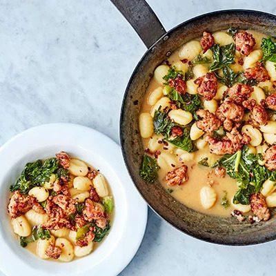

Sausage Kale Gnocchi One Pot

Plate up this delicious one-pot of sausage, kale and gnocchi in just 20 minutes, with just five minutes prep.
Serves 4 | Takes 20 mins
Original recipe: https://www.bbcgoodfood.com/recipes/sausage-kale-gnocchi-one-pot